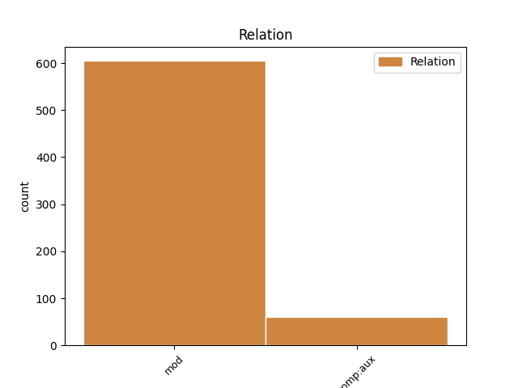
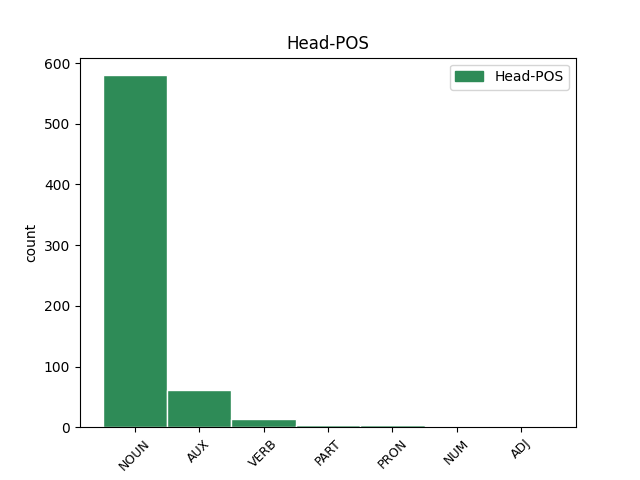
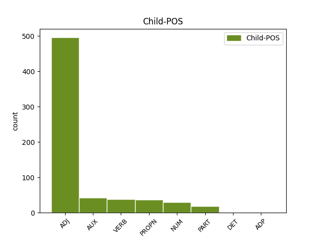

Distribution of features within this leaf



Agreement Rules sorted by frequency.
- When the dependent token is the modifer(mod) of the head token, and the head token is NOUN and the dependent token is ADJ.
1 Dindan _ _ _ _ 0 _ _ _
2 e _ _ _ _ 0 _ _ _
3 furm _ _ _ _ 0 _ _ _
4 ordinal _ _ _ _ 0 _ _ _
5 é _ _ _ _ 0 _ _ _
6 an _ _ _ _ 0 _ _ _
7 drougsant _ _ _ _ 0 _ _ _
8 or _ _ _ _ 0 _ _ _
9 hleñved _ _ _ _ 0 _ _ _
10 - _ _ _ _ 0 _ _ _
11 spéred spéred NOUN _ Case=NomAcc|Gender=Masc|Number=Sing 0 _ _ _
12 hale _ _ _ _ 0 _ _ _
13 - _ _ _ _ 0 _ _ _
14 ouenn ouenn ADJ _ Case=NomAcc|Gender=Masc|Number=Sing 11 mod _ _
15 , _ _ _ _ 0 _ _ _
16 pe _ _ _ _ 0 _ _ _
17 ablam _ _ _ _ 0 _ _ _
18 da _ _ _ _ 0 _ _ _
19 labéiou _ _ _ _ 0 _ _ _
20 ban _ _ _ _ 0 _ _ _
21 empenn _ _ _ _ 0 _ _ _
22 . _ _ _ _ 0 _ _ _
1 Türkiye'de Türkiye PROPN _ Case=Loc|Number=Sing|Person=3 3 mod _ _
2 " _ _ _ _ 0 _ _ _
3 e e NOUN _ Case=Nom|Number=Sing|Person=3 0 _ _ _
4 Turkia _ _ _ _ 0 _ _ _
5 " _ _ _ _ 0 _ _ _
6 ( _ _ _ _ 0 _ _ _
7 lokativel _ _ _ _ 0 _ _ _
8 ) _ _ _ _ 0 _ _ _
1 Teir teir NUM _ Number=Plur|NumType=Card 2 mod _ _
2 rannyezh rannyezha NOUN _ Case=Gen|Gender=Fem|Number=Plur 0 _ _ _
3 a _ _ _ _ 0 _ _ _
4 zo _ _ _ _ 0 _ _ _
5 : _ _ _ _ 0 _ _ _
6 štokaveg _ _ _ _ 0 _ _ _
7 ( _ _ _ _ 0 _ _ _
8 chtokaveg _ _ _ _ 0 _ _ _
9 ) _ _ _ _ 0 _ _ _
10 , _ _ _ _ 0 _ _ _
11 čakaveg _ _ _ _ 0 _ _ _
12 ( _ _ _ _ 0 _ _ _
13 tchakaveg _ _ _ _ 0 _ _ _
14 ) _ _ _ _ 0 _ _ _
15 ha _ _ _ _ 0 _ _ _
16 kajkaveg _ _ _ _ 0 _ _ _
17 . _ _ _ _ 0 _ _ _
1 Mont _ _ _ _ 0 _ _ _
2 ha _ _ _ _ 0 _ _ _
3 dont _ _ _ _ 0 _ _ _
4 a _ _ _ _ 0 _ _ _
5 rejont _ _ _ _ 0 _ _ _
6 , _ _ _ _ 0 _ _ _
7 a a AUX _ Number=Sing|Person=3 0 _ _ _
8 - _ _ _ _ 0 _ _ _
9 du du VERB _ Gender=Masc|Number=Sing|Tense=Past|VerbForm=Part 7 comp:aux _ _
10 pe _ _ _ _ 0 _ _ _
11 a _ _ _ _ 0 _ _ _
12 - _ _ _ _ 0 _ _ _
13 enep _ _ _ _ 0 _ _ _
14 ar _ _ _ _ 0 _ _ _
15 Romaned _ _ _ _ 0 _ _ _
16 . _ _ _ _ 0 _ _ _
1 E _ _ _ _ 0 _ _ _
2 ziskennidi _ _ _ _ 0 _ _ _
3 a avea AUX _ Number=Sing|Person=3 0 _ _ _
4 voe voe AUX _ Mood=Ind|Number=Sing|Person=3|Tense=Past|VerbForm=Fin 3 comp:aux _ _
5 anvet _ _ _ _ 0 _ _ _
6 Souvestre _ _ _ _ 0 _ _ _
7 , _ _ _ _ 0 _ _ _
8 Souestre _ _ _ _ 0 _ _ _
9 pe _ _ _ _ 0 _ _ _
10 Souêtre _ _ _ _ 0 _ _ _
11 . _ _ _ _ 0 _ _ _
1 Dilennet _ _ _ _ 0 _ _ _
2 e e PART _ Mood=Ind|Number=Sing|Person=3|Polarity=Neg|VerbForm=Fin 3 comp:aux _ _
3 voe _ AUX _ Mood=Ind|Number=Sing|Person=0|Tense=Past|VerbForm=Fin|Voice=Act 0 _ _ _
4 Zapolya _ _ _ _ 0 _ _ _
5 da _ _ _ _ 0 _ _ _
6 roue _ _ _ _ 0 _ _ _
7 Hungaria _ _ _ _ 0 _ _ _
8 dindan _ _ _ _ 0 _ _ _
9 an _ _ _ _ 0 _ _ _
10 anv _ _ _ _ 0 _ _ _
11 a _ _ _ _ 0 _ _ _
12 Yann _ _ _ _ 0 _ _ _
13 Iañ _ _ _ _ 0 _ _ _
14 met _ _ _ _ 0 _ _ _
15 anavezet _ _ _ _ 0 _ _ _
16 e _ _ _ _ 0 _ _ _
17 oa _ _ _ _ 0 _ _ _
18 bet _ _ _ _ 0 _ _ _
19 Ferdinand _ _ _ _ 0 _ _ _
20 ivez _ _ _ _ 0 _ _ _
21 gant _ _ _ _ 0 _ _ _
22 ur _ _ _ _ 0 _ _ _
23 gostezenn _ _ _ _ 0 _ _ _
24 all _ _ _ _ 0 _ _ _
25 . _ _ _ _ 0 _ _ _
1 Da _ _ _ _ 0 _ _ _
2 neuze _ _ _ _ 0 _ _ _
3 , _ _ _ _ 0 _ _ _
4 mard _ _ _ _ 0 _ _ _
5 eo is AUX _ Case=Abl|Gender=Masc|Number=Sing|Person=3|PronType=Prs 18 mod _ _
6 ret _ _ _ _ 0 _ _ _
7 bezañ _ _ _ _ 0 _ _ _
8 broadelour _ _ _ _ 0 _ _ _
9 a _ _ _ _ 0 _ _ _
10 - _ _ _ _ 0 _ _ _
11 benn _ _ _ _ 0 _ _ _
12 ober _ _ _ _ 0 _ _ _
13 gant _ _ _ _ 0 _ _ _
14 un _ _ _ _ 0 _ _ _
15 anv _ _ _ _ 0 _ _ _
16 brezhonek _ _ _ _ 0 _ _ _
17 , _ _ _ _ 0 _ _ _
18 eo is AUX _ Case=Abl|Gender=Masc|Number=Sing|Person=3|PronType=Prs 0 _ _ _
19 ret _ _ _ _ 0 _ _ _
20 anzav _ _ _ _ 0 _ _ _
21 e _ _ _ _ 0 _ _ _
22 oa _ _ _ _ 0 _ _ _
23 « _ _ _ _ 0 _ _ _
24 Fañch _ _ _ _ 0 _ _ _
25 an _ _ _ _ 0 _ _ _
26 Uhel _ _ _ _ 0 _ _ _
27 » _ _ _ _ 0 _ _ _
28 unan _ _ _ _ 0 _ _ _
29 eus _ _ _ _ 0 _ _ _
30 ar _ _ _ _ 0 _ _ _
31 vroadelourien _ _ _ _ 0 _ _ _
32 - _ _ _ _ 0 _ _ _
33 se _ _ _ _ 0 _ _ _
34 . _ _ _ _ 0 _ _ _
1 Kelennet _ _ _ _ 0 _ _ _
2 eo _ _ _ _ 0 _ _ _
3 en _ _ _ _ 0 _ _ _
4 un _ _ _ _ 0 _ _ _
5 nebeud _ _ _ _ 0 _ _ _
6 solioù sol NOUN _ Gender=Masc|Number=Plur 0 _ _ _
7 prevez prevez VERB _ Gender=Masc|Number=Plur|VerbForm=Part 6 mod _ _
8 en _ _ _ _ 0 _ _ _
9 derez _ _ _ _ 0 _ _ _
10 kentañ _ _ _ _ 0 _ _ _
11 . _ _ _ _ 0 _ _ _
1 Diouennet _ _ _ _ 0 _ _ _
2 e e PART _ Mood=Ind|Number=Sing|Person=3|Polarity=Neg|VerbForm=Fin 3 comp:aux _ _
3 voe voe NOUN _ Gender=Masc|Number=Sing|Person=3|Tense=Past 0 _ _ _
4 60 _ _ _ _ 0 _ _ _
5 % _ _ _ _ 0 _ _ _
6 an _ _ _ _ 0 _ _ _
7 organegoù _ _ _ _ 0 _ _ _
8 bev _ _ _ _ 0 _ _ _
9 e _ _ _ _ 0 _ _ _
10 - _ _ _ _ 0 _ _ _
11 pad _ _ _ _ 0 _ _ _
12 ar _ _ _ _ 0 _ _ _
13 maread _ _ _ _ 0 _ _ _
14 - _ _ _ _ 0 _ _ _
15 se _ _ _ _ 0 _ _ _
16 hag _ _ _ _ 0 _ _ _
17 eñ _ _ _ _ 0 _ _ _
18 n'eo _ _ _ _ 0 _ _ _
19 ket _ _ _ _ 0 _ _ _
20 sur _ _ _ _ 0 _ _ _
21 e _ _ _ _ 0 _ _ _
22 oa _ _ _ _ 0 _ _ _
23 ar _ _ _ _ 0 _ _ _
24 maread _ _ _ _ 0 _ _ _
25 - _ _ _ _ 0 _ _ _
26 skorn _ _ _ _ 0 _ _ _
27 an _ _ _ _ 0 _ _ _
28 abeg _ _ _ _ 0 _ _ _
29 nemetañ _ _ _ _ 0 _ _ _
30 . _ _ _ _ 0 _ _ _
1 Klañv _ _ _ _ 0 _ _ _
2 ma _ _ _ _ 0 _ _ _
3 voe _ VERB _ Gender=Masc|Number=Sing|Person=3|Tense=Past 0 _ _ _
4 goude _ _ _ _ 0 _ _ _
5 gant _ _ _ _ 0 _ _ _
6 an _ _ _ _ 0 _ _ _
7 derzhienn _ _ _ _ 0 _ _ _
8 ruz _ _ _ _ 0 _ _ _
9 , _ _ _ _ 0 _ _ _
10 e _ _ _ _ 0 _ _ _
11 oa oa AUX _ Number=Sing|Person=2 3 mod _ _
12 bet _ _ _ _ 0 _ _ _
13 lakaet _ _ _ _ 0 _ _ _
14 e _ _ _ _ 0 _ _ _
15 ti _ _ _ _ 0 _ _ _
16 ar _ _ _ _ 0 _ _ _
17 glañvourien _ _ _ _ 0 _ _ _
18 , _ _ _ _ 0 _ _ _
19 ha _ _ _ _ 0 _ _ _
20 ne _ _ _ _ 0 _ _ _
21 ne _ _ _ _ 0 _ _ _
22 oa _ _ _ _ 0 _ _ _
23 ket _ _ _ _ 0 _ _ _
24 bet _ _ _ _ 0 _ _ _
25 taolet _ _ _ _ 0 _ _ _
26 gant _ _ _ _ 0 _ _ _
27 an _ _ _ _ 0 _ _ _
28 Alamaned _ _ _ _ 0 _ _ _
29 da _ _ _ _ 0 _ _ _
30 gerzhout _ _ _ _ 0 _ _ _
31 war _ _ _ _ 0 _ _ _
32 an _ _ _ _ 0 _ _ _
33 hentoù _ _ _ _ 0 _ _ _
34 a _ _ _ _ 0 _ _ _
35 - _ _ _ _ 0 _ _ _
36 gevret _ _ _ _ 0 _ _ _
37 gant _ _ _ _ 0 _ _ _
38 ar _ _ _ _ 0 _ _ _
39 brizonidi _ _ _ _ 0 _ _ _
40 all _ _ _ _ 0 _ _ _
41 , _ _ _ _ 0 _ _ _
42 da _ _ _ _ 0 _ _ _
43 dec’hel _ _ _ _ 0 _ _ _
44 dirak _ _ _ _ 0 _ _ _
45 an _ _ _ _ 0 _ _ _
46 Arme _ _ _ _ 0 _ _ _
47 Ruz _ _ _ _ 0 _ _ _
48 o _ _ _ _ 0 _ _ _
49 tostaat _ _ _ _ 0 _ _ _
50 . _ _ _ _ 0 _ _ _
1 Al _ _ _ _ 0 _ _ _
2 lec'hioù _ _ _ _ 0 _ _ _
3 ma _ _ _ _ 0 _ _ _
4 ' _ _ _ _ 0 _ _ _
5 z _ _ _ _ 0 _ _ _
6 eo _ _ _ _ 0 _ _ _
7 kreñv _ _ _ _ 0 _ _ _
8 ar _ _ _ _ 0 _ _ _
9 sindikad _ _ _ _ 0 _ _ _
10 - _ _ _ _ 0 _ _ _
11 se _ _ _ _ 0 _ _ _
12 a _ _ _ _ 0 _ _ _
13 zo _ _ _ _ 0 _ _ _
14 Diwan _ _ _ _ 0 _ _ _
15 ( _ _ _ _ 0 _ _ _
16 e _ _ _ _ 0 _ _ _
17 lec'h _ _ _ _ 0 _ _ _
18 ma _ _ _ _ 0 _ _ _
19 ' _ _ _ _ 0 _ _ _
20 z _ _ _ _ 0 _ _ _
21 eo _ _ _ _ 0 _ _ _
22 ar _ _ _ _ 0 _ _ _
23 c'hentañ _ _ _ _ 0 _ _ _
24 sindikad _ _ _ _ 0 _ _ _
25 ) _ _ _ _ 0 _ _ _
26 ha _ _ _ _ 0 _ _ _
27 Skol skol NOUN _ Number=Sing 0 _ _ _
28 - _ _ _ _ 0 _ _ _
29 veur _ _ _ _ 0 _ _ _
30 Roazhon _ _ _ _ 0 _ _ _
31 2 _ _ _ _ 0 _ _ _
32 ( _ _ _ _ 0 _ _ _
33 e _ _ _ _ 0 _ _ _
34 lec'h _ _ _ _ 0 _ _ _
35 m'en _ PART _ Number=Sing|Person=1 27 mod _ _
36 deus _ _ _ _ 0 _ _ _
37 3 _ _ _ _ 0 _ _ _
38 dileuriad _ _ _ _ 0 _ _ _
39 ) _ _ _ _ 0 _ _ _
40 . _ _ _ _ 0 _ _ _
1 Dre _ _ _ _ 0 _ _ _
2 - _ _ _ _ 0 _ _ _
3 se _ _ _ _ 0 _ _ _
4 e _ _ _ _ 0 _ _ _
5 c'hellont c'hellont VERB _ Number=Sing|Person=2 11 mod _ _
6 lavaret _ _ _ _ 0 _ _ _
7 pelec'h _ _ _ _ 0 _ _ _
8 ez _ _ _ _ 0 _ _ _
9 - _ _ _ _ 0 _ _ _
10 resis _ _ _ _ 0 _ _ _
11 emañ _ VERB _ Mood=Ind|Number=Sing|Person=3|Tense=Pres|VerbForm=Fin 0 _ _ _
12 ar _ _ _ _ 0 _ _ _
13 menez _ _ _ _ 0 _ _ _
14 - _ _ _ _ 0 _ _ _
15 tan _ _ _ _ 0 _ _ _
16 o _ _ _ _ 0 _ _ _
17 labourat _ _ _ _ 0 _ _ _
18 . _ _ _ _ 0 _ _ _
1 Pa _ _ _ _ 0 _ _ _
2 tistroas _ _ _ _ 0 _ _ _
3 en ei VERB _ Number=Sing|Person=1|Polarity=Neg|VerbForm=Fin|Voice=Act 0 _ _ _
4 em em AUX _ Aspect=Imp|Mood=Ind|Number=Sing|Person=1|Tense=Pres|Variant=Long|VerbForm=Fin 3 comp:aux _ _
5 lakaas _ _ _ _ 0 _ _ _
6 e _ _ _ _ 0 _ _ _
7 Akademiezh _ _ _ _ 0 _ _ _
8 al _ _ _ _ 0 _ _ _
9 lu _ _ _ _ 0 _ _ _
10 . _ _ _ _ 0 _ _ _
1 Drouklazhet _ _ _ _ 0 _ _ _
2 e e AUX _ Mood=Ind|Number=Sing|Person=3|Polarity=Neg|VerbForm=Fin 3 comp:aux _ _
3 voe voe NOUN _ Aspect=Perf|Gender=Neut|Number=Sing|VerbForm=Part 0 _ _ _
4 gant _ _ _ _ 0 _ _ _
5 e _ _ _ _ 0 _ _ _
6 genderv _ _ _ _ 0 _ _ _
7 Salaun _ _ _ _ 0 _ _ _
8 , _ _ _ _ 0 _ _ _
9 etre _ _ _ _ 0 _ _ _
10 an _ _ _ _ 0 _ _ _
11 2 _ _ _ _ 0 _ _ _
12 a _ _ _ _ 0 _ _ _
13 viz _ _ _ _ 0 _ _ _
14 Du _ _ _ _ 0 _ _ _
15 hag _ _ _ _ 0 _ _ _
16 an _ _ _ _ 0 _ _ _
17 12 _ _ _ _ 0 _ _ _
18 a _ _ _ _ 0 _ _ _
19 viz _ _ _ _ 0 _ _ _
20 Du _ _ _ _ 0 _ _ _
21 857 _ _ _ _ 0 _ _ _
22 . _ _ _ _ 0 _ _ _
1 Stêr stêr NOUN _ Case=NomAcc|Definite=Def|Gender=Masc|Number=Sing 0 _ _ _
2 hirañ _ _ _ _ 0 _ _ _
3 ar _ _ _ _ 0 _ _ _
4 Rouantelezh _ _ _ _ 0 _ _ _
5 eo is AUX _ Case=Abl|Gender=Masc|Number=Sing|Person=3|PronType=Prs 1 mod _ _
6 ar _ _ _ _ 0 _ _ _
7 stêr _ _ _ _ 0 _ _ _
8 Severn _ _ _ _ 0 _ _ _
9 . _ _ _ _ 0 _ _ _
1 Kelenn _ _ _ _ 0 _ _ _
2 a avea PART _ Number=Sing|Person=3 0 _ _ _
3 reas rear VERB _ Mood=Imp|Number=Sing|Person=2|VerbForm=Fin 2 comp:aux _ _
4 e _ _ _ _ 0 _ _ _
5 Chalon _ _ _ _ 0 _ _ _
6 - _ _ _ _ 0 _ _ _
7 sur _ _ _ _ 0 _ _ _
8 - _ _ _ _ 0 _ _ _
9 Sâone _ _ _ _ 0 _ _ _
10 . _ _ _ _ 0 _ _ _
1 Lazhet lazhre VERB _ Gender=Masc|Number=Sing|Tense=Past|VerbForm=Part 5 mod _ _
2 e _ _ _ _ 0 _ _ _
3 voe _ _ _ _ 0 _ _ _
4 Lazar _ _ _ _ 0 _ _ _
5 ha avere AUX _ Mood=Ind|Number=Sing|Person=3|Tense=Pres|VerbForm=Fin 0 _ _ _
6 distrujet _ _ _ _ 0 _ _ _
7 e _ _ _ _ 0 _ _ _
8 voe _ _ _ _ 0 _ _ _
9 e _ _ _ _ 0 _ _ _
10 lu _ _ _ _ 0 _ _ _
11 . _ _ _ _ 0 _ _ _
1 Lavaret _ _ _ _ 0 _ _ _
2 e _ _ _ _ 0 _ _ _
3 veze _ _ _ _ 0 _ _ _
4 e _ _ _ _ 0 _ _ _
5 oa _ _ _ _ 0 _ _ _
6 padelezh _ _ _ _ 0 _ _ _
7 ar _ _ _ _ 0 _ _ _
8 veaj _ _ _ _ 0 _ _ _
9 d'ar _ _ _ _ 0 _ _ _
10 pennlec'h _ _ _ _ 0 _ _ _
11 dindan _ _ _ _ 0 _ _ _
12 un _ _ _ _ 0 _ _ _
13 devezh devezh NUM _ Case=NomAcc|Definite=Def|Gender=Masc|Number=Sing 0 _ _ _
14 marc'hegañ marc'hegañ ADJ _ Case=NomAcc|Gender=Masc|Number=Sing 13 mod _ _
15 . _ _ _ _ 0 _ _ _
1 Kaset _ _ _ _ 0 _ _ _
2 e e PART _ Mood=Ind|Number=Sing|Person=3|Polarity=Neg|VerbForm=Fin 3 comp:aux _ _
3 voe voe VERB _ Gender=Masc|Number=Sing|Person=3|Tense=Past 0 _ _ _
4 Eduard _ _ _ _ 0 _ _ _
5 Shevardnadze _ _ _ _ 0 _ _ _
6 eus _ _ _ _ 0 _ _ _
7 ar _ _ _ _ 0 _ _ _
8 galloud _ _ _ _ 0 _ _ _
9 gant _ _ _ _ 0 _ _ _
10 Dipac'h _ _ _ _ 0 _ _ _
11 ar _ _ _ _ 0 _ _ _
12 Rozenn _ _ _ _ 0 _ _ _
13 e _ _ _ _ 0 _ _ _
14 2003 _ _ _ _ 0 _ _ _
15 goude _ _ _ _ 0 _ _ _
16 dilennadegoù _ _ _ _ 0 _ _ _
17 daelet _ _ _ _ 0 _ _ _
18 . _ _ _ _ 0 _ _ _
1 D’ar _ _ _ _ 0 _ _ _
2 mare mare ADJ _ Number=Sing 5 mod _ _
3 - _ _ _ _ 0 _ _ _
4 se _ _ _ _ 0 _ _ _
5 e e AUX _ Mood=Ind|Number=Sing|Person=3|Tense=Pres|VerbForm=Fin 0 _ _ _
6 klaskas _ _ _ _ 0 _ _ _
7 Norvegia _ _ _ _ 0 _ _ _
8 bezañ _ _ _ _ 0 _ _ _
9 dizalc’h _ _ _ _ 0 _ _ _
10 ha _ _ _ _ 0 _ _ _
11 brezel _ _ _ _ 0 _ _ _
12 a _ _ _ _ 0 _ _ _
13 voe _ _ _ _ 0 _ _ _
14 etre _ _ _ _ 0 _ _ _
15 Sveden _ _ _ _ 0 _ _ _
16 ha _ _ _ _ 0 _ _ _
17 Norvegia _ _ _ _ 0 _ _ _
18 e _ _ _ _ 0 _ _ _
19 1814 _ _ _ _ 0 _ _ _
20 . _ _ _ _ 0 _ _ _
1 Jedet _ _ _ _ 0 _ _ _
2 ez _ _ _ _ 0 _ _ _
3 eus _ _ _ _ 0 _ _ _
4 bet _ _ _ _ 0 _ _ _
5 dre _ _ _ _ 0 _ _ _
6 - _ _ _ _ 0 _ _ _
7 vras _ _ _ _ 0 _ _ _
8 e e PART _ Mood=Ind|Number=Sing|Person=3|Polarity=Neg|VerbForm=Fin 0 _ _ _
9 oa oa AUX _ Number=Sing|Person=2|Shared=Yes 8 comp:aux _ _
10 bet _ _ _ _ 0 _ _ _
11 kollet _ _ _ _ 0 _ _ _
12 18 _ _ _ _ 0 _ _ _
13 miliard _ _ _ _ 0 _ _ _
14 a _ _ _ _ 0 _ _ _
15 euroioù _ _ _ _ 0 _ _ _
16 evit _ _ _ _ 0 _ _ _
17 a _ _ _ _ 0 _ _ _
18 sell _ _ _ _ 0 _ _ _
19 amerzh _ _ _ _ 0 _ _ _
20 ar _ _ _ _ 0 _ _ _
21 vro _ _ _ _ 0 _ _ _
22 . _ _ _ _ 0 _ _ _
1 Kevatal _ _ _ _ 0 _ _ _
2 eo is PRON _ Case=Abl|Gender=Masc|Number=Sing|Person=3|PronType=Prs 0 _ _ _
3 da _ _ _ _ 0 _ _ _
4 ria _ _ _ _ 0 _ _ _
5 ( _ _ _ _ 0 _ _ _
6 ger _ _ _ _ 0 _ _ _
7 spagnoleg _ _ _ _ 0 _ _ _
8 ) _ _ _ _ 0 _ _ _
9 ha _ VERB _ Mood=Ind|Number=Sing|Person=3|Tense=Pres|VerbForm=Fin 2 mod _ _
10 dre _ _ _ _ 0 _ _ _
11 vras _ _ _ _ 0 _ _ _
12 e _ _ _ _ 0 _ _ _
13 vez _ _ _ _ 0 _ _ _
14 implijet _ _ _ _ 0 _ _ _
15 aber _ _ _ _ 0 _ _ _
16 evit _ _ _ _ 0 _ _ _
17 an _ _ _ _ 0 _ _ _
18 aberioù _ _ _ _ 0 _ _ _
19 bras _ _ _ _ 0 _ _ _
20 e _ _ _ _ 0 _ _ _
21 Bro _ _ _ _ 0 _ _ _
22 - _ _ _ _ 0 _ _ _
23 Leon _ _ _ _ 0 _ _ _
24 ha _ _ _ _ 0 _ _ _
25 ria _ _ _ _ 0 _ _ _
26 evit _ _ _ _ 0 _ _ _
27 ar _ _ _ _ 0 _ _ _
28 re _ _ _ _ 0 _ _ _
29 all _ _ _ _ 0 _ _ _
30 ( _ _ _ _ 0 _ _ _
31 ria _ _ _ _ 0 _ _ _
32 de _ _ _ _ 0 _ _ _
33 Lorient _ _ _ _ 0 _ _ _
34 , _ _ _ _ 0 _ _ _
35 ria _ _ _ _ 0 _ _ _
36 d'Étel _ _ _ _ 0 _ _ _
37 , _ _ _ _ 0 _ _ _
38 ria _ _ _ _ 0 _ _ _
39 de _ _ _ _ 0 _ _ _
40 la _ _ _ _ 0 _ _ _
41 Rance _ _ _ _ 0 _ _ _
42 ) _ _ _ _ 0 _ _ _
43 ; _ _ _ _ 0 _ _ _
44 padal _ _ _ _ 0 _ _ _
45 e _ _ _ _ 0 _ _ _
46 brezhoneg _ _ _ _ 0 _ _ _
47 e _ _ _ _ 0 _ _ _
48 ranker _ _ _ _ 0 _ _ _
49 implijout _ _ _ _ 0 _ _ _
50 ar _ _ _ _ 0 _ _ _
51 ger _ _ _ _ 0 _ _ _
52 aber _ _ _ _ 0 _ _ _
53 evito _ _ _ _ 0 _ _ _
54 holl _ _ _ _ 0 _ _ _
55 . _ _ _ _ 0 _ _ _
1 E _ _ _ _ 0 _ _ _
2 dibenn _ _ _ _ 0 _ _ _
3 ar _ _ _ _ 0 _ _ _
4 bloavezhioù _ _ _ _ 0 _ _ _
5 1960 _ _ _ _ 0 _ _ _
6 e _ _ _ _ 0 _ _ _
7 oa _ _ _ _ 0 _ _ _
8 krog _ _ _ _ 0 _ _ _
9 darn _ _ _ _ 0 _ _ _
10 eus _ _ _ _ 0 _ _ _
11 an _ _ _ _ 0 _ _ _
12 annezidi _ _ _ _ 0 _ _ _
13 gozh _ _ _ _ 0 _ _ _
14 da _ _ _ _ 0 _ _ _
15 zistreiñ _ _ _ _ 0 _ _ _
16 eus _ _ _ _ 0 _ _ _
17 Enez _ _ _ _ 0 _ _ _
18 Kili _ _ _ _ 0 _ _ _
19 , _ _ _ _ 0 _ _ _
20 met _ _ _ _ 0 _ _ _
21 ret _ _ _ _ 0 _ _ _
22 e e PART _ Mood=Ind|Number=Sing|Person=3|Polarity=Neg|VerbForm=Fin 0 _ _ _
23 voe _ _ _ _ 0 _ _ _
24 ober _ _ _ _ 0 _ _ _
25 dezho _ _ _ _ 0 _ _ _
26 mont _ _ _ _ 0 _ _ _
27 kuit _ _ _ _ 0 _ _ _
28 , _ _ _ _ 0 _ _ _
29 ken _ _ _ _ 0 _ _ _
30 kreñv _ _ _ _ 0 _ _ _
31 e e PART _ Mood=Ind|Number=Sing|Person=3|Polarity=Neg|VerbForm=Fin 22 mod _ _
32 oa _ _ _ _ 0 _ _ _
33 ar _ _ _ _ 0 _ _ _
34 skinoberiusted _ _ _ _ 0 _ _ _
35 . _ _ _ _ 0 _ _ _
1 Dre _ _ _ _ 0 _ _ _
2 un _ _ _ _ 0 _ _ _
3 diblasamant _ _ _ _ 0 _ _ _
4 anklel _ _ _ _ 0 _ _ _
5 e _ _ _ _ 0 _ _ _
6 tremen _ _ _ _ 0 _ _ _
7 ar _ _ _ _ 0 _ _ _
8 vrec'h _ _ _ _ 0 _ _ _
9 eus _ _ _ _ 0 _ _ _
10 un _ _ _ _ 0 _ _ _
11 eil eil ADJ _ Case=NomAcc|Definite=Def|Gender=Masc|Number=Sing 12 mod _ _
12 roudenn roudenn ADJ _ Case=NomAcc|Definite=Def|Gender=Masc|Number=Sing 0 _ _ _
13 enskrivañ _ _ _ _ 0 _ _ _
14 d'eben _ _ _ _ 0 _ _ _
15 . _ _ _ _ 0 _ _ _
1 Levr levr NOUN _ Case=NomAcc|Gender=Masc|Number=Sing 0 _ _ _
2 sanntel sanntel ADP _ Case=NomAcc|Gender=Masc|Number=Sing 1 mod _ _
3 an _ _ _ _ 0 _ _ _
4 Islam _ _ _ _ 0 _ _ _
5 , _ _ _ _ 0 _ _ _
6 ar _ _ _ _ 0 _ _ _
7 C'horan _ _ _ _ 0 _ _ _
8 a _ _ _ _ 0 _ _ _
9 zo _ _ _ _ 0 _ _ _
10 lezenn _ _ _ _ 0 _ _ _
11 veur _ _ _ _ 0 _ _ _
12 ar _ _ _ _ 0 _ _ _
13 rouantelezh _ _ _ _ 0 _ _ _
14 hag _ _ _ _ 0 _ _ _
15 ar _ _ _ _ 0 _ _ _
16 Chariadiaz _ _ _ _ 0 _ _ _
17 he _ _ _ _ 0 _ _ _
18 frammadur _ _ _ _ 0 _ _ _
19 gwirel _ _ _ _ 0 _ _ _
20 . _ _ _ _ 0 _ _ _
1 Hiziv _ _ _ _ 0 _ _ _
2 an _ _ _ _ 0 _ _ _
3 deiz _ _ _ _ 0 _ _ _
4 ez _ _ _ _ 0 _ _ _
5 eo is PRON _ Case=Abl|Gender=Masc|Number=Sing|Person=3|PronType=Prs 0 _ _ _
6 modern _ _ _ _ 0 _ _ _
7 ha ha AUX _ Mood=Ind|Number=Sing|Person=3|Tense=Pres|VerbForm=Fin 5 mod _ _
8 diorroet _ _ _ _ 0 _ _ _
9 Stockholm _ _ _ _ 0 _ _ _
10 : _ _ _ _ 0 _ _ _
11 ur _ _ _ _ 0 _ _ _
12 metro _ _ _ _ 0 _ _ _
13 a _ _ _ _ 0 _ _ _
14 voe _ _ _ _ 0 _ _ _
15 savet _ _ _ _ 0 _ _ _
16 er _ _ _ _ 0 _ _ _
17 bloavezhioù _ _ _ _ 0 _ _ _
18 1950 _ _ _ _ 0 _ _ _
19 , _ _ _ _ 0 _ _ _
20 e _ _ _ _ 0 _ _ _
21 karter _ _ _ _ 0 _ _ _
22 Kista _ _ _ _ 0 _ _ _
23 eo _ _ _ _ 0 _ _ _
24 bras _ _ _ _ 0 _ _ _
25 pouez _ _ _ _ 0 _ _ _
26 an _ _ _ _ 0 _ _ _
27 teknologiezhioù _ _ _ _ 0 _ _ _
28 nevez _ _ _ _ 0 _ _ _
29 . _ _ _ _ 0 _ _ _
1 Zeus _ _ _ _ 0 _ _ _
2 en _ _ _ _ 0 _ _ _
3 deus _ _ _ _ 0 _ _ _
4 un un DET _ Gender=Masc|Number=Sing|PronType=Art 6 mod _ _
5 tamm _ _ _ _ 0 _ _ _
6 truez truer VERB _ Mood=Ind|Number=Sing|Person=2|Tense=Pres|VerbForm=Fin 0 _ _ _
7 outañ _ _ _ _ 0 _ _ _
8 . _ _ _ _ 0 _ _ _
1 An _ _ _ _ 0 _ _ _
2 eil eil NUM _ Case=NomAcc|Definite=Def|Gender=Masc|Number=Sing 3 mod _ _
3 brasañ bra ADJ _ Case=NomAcc|Definite=Def|Gender=Masc|Number=Sing 0 _ _ _
4 eo _ _ _ _ 0 _ _ _
5 eus _ _ _ _ 0 _ _ _
6 ar _ _ _ _ 0 _ _ _
7 Stadoù _ _ _ _ 0 _ _ _
8 , _ _ _ _ 0 _ _ _
9 hag _ _ _ _ 0 _ _ _
10 an _ _ _ _ 0 _ _ _
11 hini _ _ _ _ 0 _ _ _
12 vrasañ _ _ _ _ 0 _ _ _
13 eus _ _ _ _ 0 _ _ _
14 an _ _ _ _ 0 _ _ _
15 48 _ _ _ _ 0 _ _ _
16 Stad _ _ _ _ 0 _ _ _
17 kenstag _ _ _ _ 0 _ _ _
18 . _ _ _ _ 0 _ _ _
Disagree Examples:
1 An _ _ _ _ 0 _ _ _
2 darn darn NOUN _ Case=NomAcc|Definite=Def|Gender=Masc|Number=Sing 0 _ _ _
3 vrasañ vrasañ ADJ _ Case=NomAcc|Gender=Masc|Number=Plur 2 mod _ _
4 eus _ _ _ _ 0 _ _ _
5 Norvegiz _ _ _ _ 0 _ _ _
6 a _ _ _ _ 0 _ _ _
7 zo _ _ _ _ 0 _ _ _
8 Luteraned _ _ _ _ 0 _ _ _
9 ( _ _ _ _ 0 _ _ _
10 86 _ _ _ _ 0 _ _ _
11 % _ _ _ _ 0 _ _ _
12 ) _ _ _ _ 0 _ _ _
13 . _ _ _ _ 0 _ _ _
1 E _ _ _ _ 0 _ _ _
2 101 101 NUM _ Number=Plur|NumForm=Digit|NumType=Card 3 mod _ _
3 izel izel NOUN _ Definite=Ind|Gender=Masc|Number=Sing 0 _ _ _
4 a _ _ _ _ 0 _ _ _
5 zilenner _ _ _ _ 0 _ _ _
6 evit _ _ _ _ 0 _ _ _
7 4 _ _ _ _ 0 _ _ _
8 bloavezh _ _ _ _ 0 _ _ _
9 . _ _ _ _ 0 _ _ _
1 27 27 NUM _ Number=Plur|NumType=Card 3 mod _ _
2 . _ _ _ _ 0 _ _ _
3 Movimeg movimeg NOUN _ Definite=Ind|Gender=Neut|Number=Sing 0 _ _ _
4 ( _ _ _ _ 0 _ _ _
5 Bolivia _ _ _ _ 0 _ _ _
6 ) _ _ _ _ 0 _ _ _
1 Rannet _ _ _ _ 0 _ _ _
2 e _ _ _ _ 0 _ _ _
3 voe _ VERB _ Gender=Masc|Number=Sing|Person=3|Tense=Past 0 _ _ _
4 an _ _ _ _ 0 _ _ _
5 aodoù _ _ _ _ 0 _ _ _
6 etre _ _ _ _ 0 _ _ _
7 Hellaziz _ _ _ _ 0 _ _ _
8 , _ _ _ _ 0 _ _ _
9 Turked _ _ _ _ 0 _ _ _
10 , _ _ _ _ 0 _ _ _
11 ha _ _ _ _ 0 _ _ _
12 stadoù _ _ _ _ 0 _ _ _
13 latin _ _ _ _ 0 _ _ _
14 ( _ _ _ _ 0 _ _ _
15 Venezia _ _ _ _ 0 _ _ _
16 dreist _ _ _ _ 0 _ _ _
17 - _ _ _ _ 0 _ _ _
18 holl _ _ _ _ 0 _ _ _
19 ) _ _ _ _ 0 _ _ _
20 ken _ _ _ _ 0 _ _ _
21 na _ _ _ _ 0 _ _ _
22 voe _ AUX _ Gender=Fem,Masc|HebBinyan=PAAL|Number=Plur|Person=3|Tense=Past|Voice=Act 3 mod _ _
23 kemeret _ _ _ _ 0 _ _ _
24 Enez _ _ _ _ 0 _ _ _
25 Rodez _ _ _ _ 0 _ _ _
26 gant _ _ _ _ 0 _ _ _
27 an _ _ _ _ 0 _ _ _
28 Durked _ _ _ _ 0 _ _ _
29 e _ _ _ _ 0 _ _ _
30 1522 _ _ _ _ 0 _ _ _
31 , _ _ _ _ 0 _ _ _
32 hag _ _ _ _ 0 _ _ _
33 aloubet _ _ _ _ 0 _ _ _
34 Kreta _ _ _ _ 0 _ _ _
35 er _ _ _ _ 0 _ _ _
36 XVII _ _ _ _ 0 _ _ _
37 - _ _ _ _ 0 _ _ _
38 vet _ _ _ _ 0 _ _ _
39 kantved _ _ _ _ 0 _ _ _
40 ( _ _ _ _ 0 _ _ _
41 Kandia _ _ _ _ 0 _ _ _
42 e _ _ _ _ 0 _ _ _
43 1669 _ _ _ _ 0 _ _ _
44 , _ _ _ _ 0 _ _ _
45 Spinalonga _ _ _ _ 0 _ _ _
46 e _ _ _ _ 0 _ _ _
47 1718 _ _ _ _ 0 _ _ _
48 ) _ _ _ _ 0 _ _ _
49 . _ _ _ _ 0 _ _ _
1 Goulenn _ _ _ _ 0 _ _ _
2 a _ _ _ _ 0 _ _ _
3 reas _ _ _ _ 0 _ _ _
4 ar _ _ _ _ 0 _ _ _
5 c'hannad _ NOUN _ Case=NomAcc|Gender=Masc|Number=Plur 0 _ _ _
6 rusian rusian ADJ _ Case=NomAcc|Gender=Masc|Number=Sing 5 mod _ _
7 e _ _ _ _ 0 _ _ _
8 Polonia _ _ _ _ 0 _ _ _
9 e _ _ _ _ 0 _ _ _
10 vije _ _ _ _ 0 _ _ _
11 tennet _ _ _ _ 0 _ _ _
12 e _ _ _ _ 0 _ _ _
13 vedalenn _ _ _ _ 0 _ _ _
14 digant _ _ _ _ 0 _ _ _
15 Kozakiewicz _ _ _ _ 0 _ _ _
16 evit _ _ _ _ 0 _ _ _
17 bezañ _ _ _ _ 0 _ _ _
18 " _ _ _ _ 0 _ _ _
19 louzet _ _ _ _ 0 _ _ _
20 an _ _ _ _ 0 _ _ _
21 holl _ _ _ _ 0 _ _ _
22 Sovieted _ _ _ _ 0 _ _ _
23 " _ _ _ _ 0 _ _ _
24 . _ _ _ _ 0 _ _ _